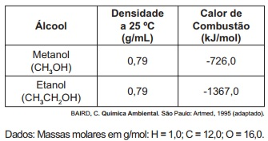
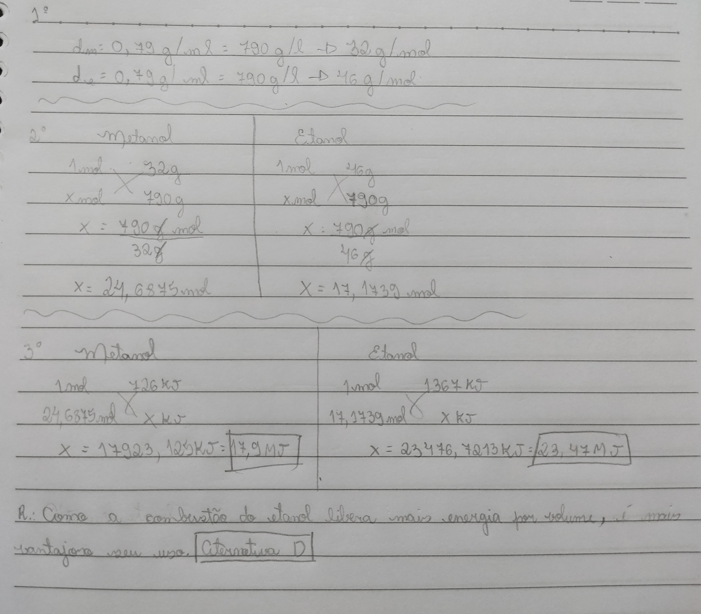
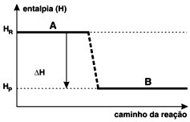

Larissa Schumacker e Maria Luiza Jiquiriçá
Questões sobre Termodinâmica química
(ENEM 2010 / CADERNO AZUL / QUESTÃO 69) No que tange à tecnologia de combustíveis alternativos, muitos especialistas em energia acreditam que os alcoóis vão crescer em importância em um futuro próximo. Realmente, alcoóis como metanol e etenol têm encontrado alguns nichos para uso doméstico como combustíveis há muitas décadas e, recentemente, vêm obtendo uma aceitação cada vez maior como aditivos ou mesmo como substitutos para a gasolina em veículos. Algumas das propriedades físicas desses combustíveis são mostradas no quadro seguinte.

Considere que, em pequenos volumes, o custo de produção de ambos os alcoóis seja o mesmo. Dessa forma, do ponto de vista econômico, é mais vantajoso utilizar
a) metanol, pois sua combustão completa fornece, aproximadamente, 22,7 kJ de energia por litro de combustível queimado.
b) etanol, pois sua combustão completa fornece, aproximadamente, 29,7 kJ de energia por litro de combustível queimado.
c) metanol, pois sua combustão completa fornece, aproximadamente, 17,9 MJ de energia por litro de combustível queimado.
d) etanol, pois sua combustão completa fornece, aproximadamente, 23,5 MJ de energia por litro de combustível queimado.
e) etanol, pois sua combustão completa fornece, aproximadamente, 33,7 MJ de energia por litro de combustível queimado.
Alternativa D. Resolução:

(UFRRJ) Desde a pré-história, quando aprendeu a manipular o fogo para cozinhar seus alimentos e se aquecer, o homem vem percebendo sua dependência cada vez maior das várias formas de energia. A energia é importante para uso industrial e doméstico, nos transportes etc.
Existem reações químicas que ocorrem com liberação ou absorção de energia, sob a forma de calor, denominadas, respectivamente, como exotérmicas e endotérmicas. Observe o gráfico a seguir e assinale a alternativa correta:

a) O gráfico representa uma reação endotérmica.
b) O gráfico representa uma reação exotérmica.
c) A entalpia dos reagentes é igual à dos produtos.
d) A entalpia dos produtos é maior que a dos reagentes.
e) A variação de entalpia é maior que zero.
Alternativa B. Resolução:
O gráfico da questão é de uma reação exotérmica, já que a entalpia dos reagentes (Hr) apresenta maior valor que a entalpia dos produtos (Hp).